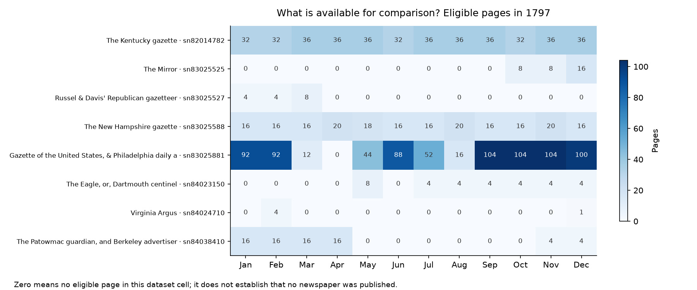
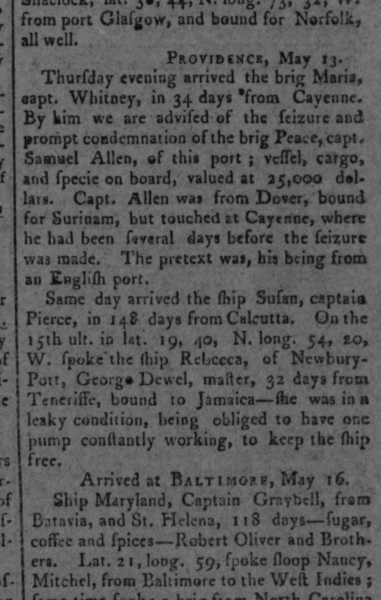
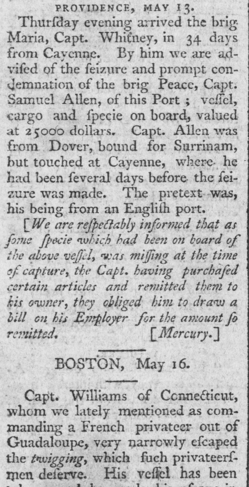
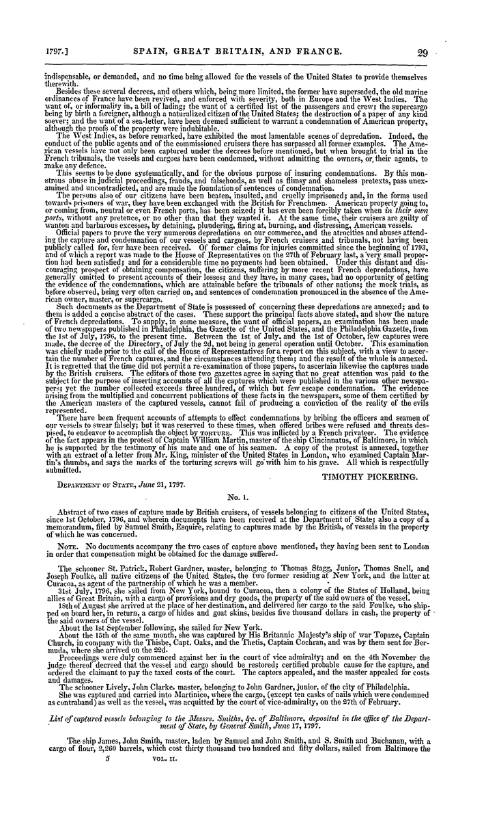
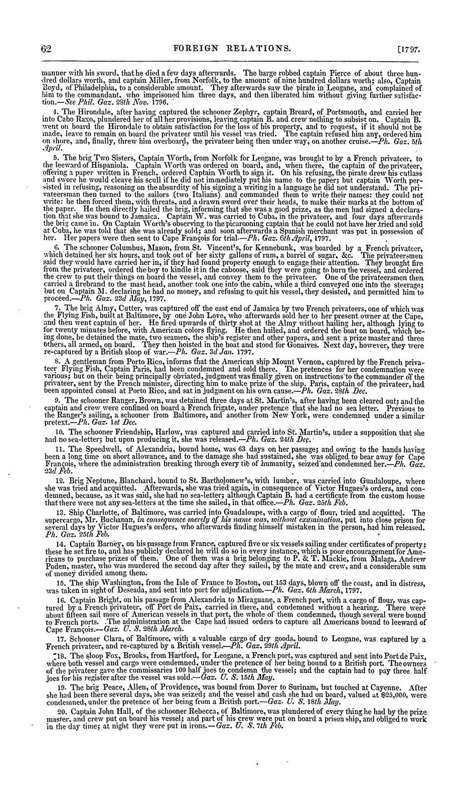
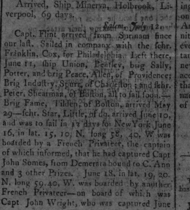
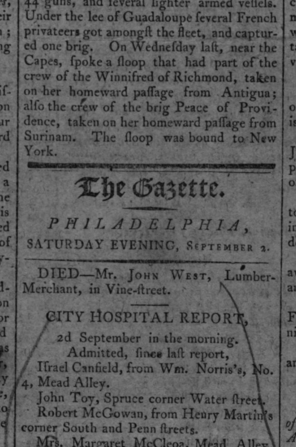
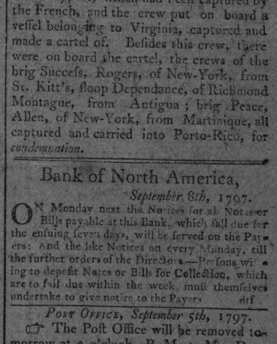
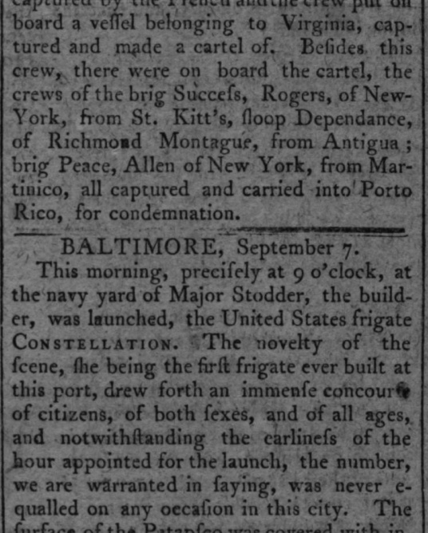

Reading an incomplete archive
Follow a passage, compare its appearances, and inspect what the surviving record can—and cannot—show. This notebook opens evidence for interpretation, with the selection and counting choices visible.
A bounded study of newspapers in 1797, plus a documented case of institutional citation. The material is historical; automated matching and topic labels are exploratory.
Start with what is present
The coverage is uneven. A blank in the archive is not evidence that nothing happened, or that nothing was published. The plot includes only pages eligible for this model.

Keep more than one way of counting
Every publication preserves an appearance of the text. Discounting later matched wording asks a different question: how much do these curves depend on repetition?
Under the main setting, the shipping peak moves from October to September; the European-politics peak moves from April to May. Neither curve measures society's actual attention. Short passages and noisy OCR can fail the matching rules.
A reported seizure enters an official record
The brig Peace case connects two newspaper versions to an explicit citation in a government report. Its outcome remains unestablished. Dates below describe different kinds of records.
Read the two newspaper passages and the official report scan








Four later publications with unresolved vessel identity
Additional search: 24,982 pages dated 1796–1805; 106 candidates. These four passages were checked against scans but are not merged into a confirmed outcome.
1797-07-17 · P031
Peace, Allen, of Providence, listed at Surinam on June 11. The scan supports the name, master surname, home port and Surinam listing. This is a plausible continuation lead; it neither states a release from Cayenne nor establishes the identity beyond doubt.

1797-09-02 · P032
Crew of Peace of Providence reported after a capture homeward from Surinam. The scan supports the place and route, but does not name the master or connect the capture to the May Cayenne account. Keep as a possible continuation, not a confirmed second capture of the same vessel.

1797-09-08 · P033
Peace, Allen, of New York, reported captured from Martinique. The port and route differ from the May account. Matching name and surname alone do not resolve vessel identity.

1797-09-11 · P034
Corresponding Peace/Allen/New York account appears again. The scan repeats the Porto Rico condemnation account, with Martinico as the departure place. This is another publication, not an independent confirmation or an established continuation of the Cayenne case.

Case ledger and relation types · Additional search and dispositions
Compare the passages yourself
The default list contains examples inspected as normalized text, plus previously reviewed case comparisons. Switch to all candidates to inspect the full output. These pairs have not all been checked against scans.
The matching excerpts below are lowercased word tokens. Digits and punctuation are omitted. Use the linked original page to check dates, amounts and wording; equal matching text does not establish equal factual claims.